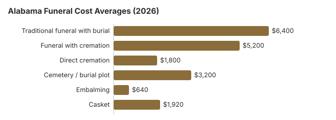

Funeral Costs in Alabama
A traditional funeral with burial in Alabama runs about $6,400 on our estimates, a funeral followed by cremation about $5,200, and direct cremation starts near $1,800. A cemetery plot, roughly $3,200 here, sits on top of the funeral home bill. This page goes item by item, then covers what Alabama law actually requires, such as the 24-hour wait before cremation, and where to look for help paying.
Alabama Funeral Prices by Item
The method of disposition sets the baseline for funeral costs in Alabama. Individual prices in Alabama still vary by provider, and the AL Board of Funeral Service licenses Alabama homes without setting their prices.
Funeral home services include basic services, and the NFDA 2023 national median for that fee is $2,495. Cemetery fees are separate from funeral home services.
| Service | Average Cost | Range |
|---|---|---|
| Traditional funeral with burial | $6,400 | $4,800 – $8,320 |
| Funeral with cremation | $5,200 | $4,160 – $6,760 |
| Direct cremation | $1,800 | $1,260 – $2,520 |
| Cemetery / burial plot | $3,200 | $1,600 – $6,400 |
| Embalming | $640 | $500 – $1,500 |
| Casket | $1,920 | $640 – $5,120 |
Methodology note: The Alabama prices on this page are our own estimates rather than a survey of Alabama funeral homes, so treat them as a starting point, not a quote or professional advice. See how we calculate them or read the full disclaimer.
State sources: Ala. Code § 38-8-2.

Basic caskets can start near $1,000, while premium materials can exceed $10,000.
What Drives Funeral Costs in Alabama
Funeral costs in Alabama are influenced by several factors.
Alabama prices follow a few local forces: how many funeral homes compete in a town, land values that set cemetery prices, and family traditions that still lean toward a church service and burial. Cremation is chosen in about 38% of Alabama deaths, so in places where it is common, providers tend to compete harder on cremation packages than they do in rural counties where burial dominates.
What Sets Alabama Apart (South)
Homegoing services, repast meals, and strong church involvement remain part of Alabama funeral culture, and many congregations will cover or reduce the service-venue portion of the cost for members, similar to patterns seen in Memphis funeral costs and traditions. When pricing a traditional funeral in Alabama, ask explicitly whether the quote assumes the service at the funeral home versus at a church: the latter often lowers facility fees by $500-$1,500, while natural burial choices may be harder to find in some Alabama communities than standard church-based services.
Your Consumer Rights in Alabama
When an Alabama funeral home will not give you its price list, refuses to quote by phone, or charges a fee because you bought the casket elsewhere, report it to the FTC at ftc.gov. The Funeral Consumers Alliance can also help you work out whether a charge was allowed.
Where Alabama Families Can Find Money for a Funeral
- State assistance programs: Alabama has no state funeral payment; public help is the county commission's pauper-burial payment under Ala. Code § 38-8-2, and because each commission sets its own rate, two neighboring counties can pay very different amounts for the same burial. Medicaid funeral assistance
- Payment plans: Most funeral homes in Alabama offer payment plans or financing for services. Payment plan options
Local programs may also exist through counties, charities, or community groups, depending on where the family lives.
Educational Resources
- Funeral Consumers AllianceIndependent nonprofit consumer advocacy for funeral rights
- FTC Funeral RuleThe federal rule protecting funeral consumers
- Funeral Insurance GuideCompare final expense and burial insurance options
- Best Burial Insurance CompaniesSide-by-side comparison of top burial insurance providers
- Payment Assistance GuideGovernment programs and financial help for funeral costs
- Insurance Plan ComparisonCompare coverage, premiums, and payout speed across providers
Compare Funeral Costs
- Average Funeral Cost in 2026National cost breakdown with real prices
- Cremation vs. Burial Cost ComparisonSide-by-side price comparison to help you decide
- Funeral Cost BreakdownEvery line item explained: know what you're paying for
- Cheapest Funeral OptionsLower-cost alternatives, with typical price ranges
- Direct Cremation: Most Affordable OptionNFDA 2023 median $2,645 with a family-supplied container (latest available)
- How to Compare Funeral PricesStep-by-step guide to getting the best price
Fees Alabama Families Often Miss
- In Alabama, embalming is almost never legally required, and embalming fees generally range from $500 to $1,500, with about $640 as our Alabama estimate.
- Vault/liner surcharge: Cemeteries may require a specific vault brand or type, and a grave liner is also a common gravesite requirement, inflating costs by $500–$2,000+
Other Alabama Guides on This Site
For deeper analysis on specific disposition types in Alabama, see our dedicated guides:
Cremation Costs in Alabama
Complete guide to cremation pricing in Alabama including direct cremation from $1,800, cremation with service from $5,200, cremation container options, urn options, scattering rules, and memorial alternatives. The cremation rate in Alabama is 38%.
Burial Costs in Alabama
Detailed breakdown of burial expenses in Alabama including cemetery plots from $3,200, caskets, vaults, headstones, grave markers, and opening/closing fees; some Alabama burial guides also break out cemetery plot pricing in the roughly $500 to $3,000 range and paperwork costs such as the $15 first death certificate. Total burial costs in Alabama range from $14,900 to $19,400.
Choosing Between Cremation and Burial in Alabama
Cremation
- Direct cremation ranges from $1,200 to $4,403 in Alabama
- Full-service cremation costs between $6,000 and $9,687 in Alabama
- No cemetery plot required
- More flexible memorial options
- Current rate: approximately 40% of families as of 2025
- Direct services eliminate costs like embalming and facility fees
- A cremation container is typically used instead of a casket for direct cremation
- Urns generally range from $100 to $500, while custom options cost more
Traditional Burial
- Traditional service from $6,400 for burial cremation cost comparisons
- Cemetery plot typically $1,000–$4,000
- Opening and closing fees usually $1,000–$2,000
- Vault or liner typically required, with vaults often adding $1,600–$2,000
- Permanent memorial location
- Standard casket around $2,500, with higher-end options costing more
The Least Expensive Ways to Hold a Funeral in Alabama
| Option | Estimated Cost | What's Included |
|---|---|---|
| Direct cremation | $1,800 | Cremation with no viewing or service; Alabama requires a 24-hour wait first (Ala. Code § 34-13-121). |
| Direct burial | $4,500–$5,041 | Burial soon after death without embalming or viewing; the Alabama cemetery charges for the plot and opening separately. |
| Green burial | $3,520 | Biodegradable container, no embalming: green burials can be eco-friendly and affordable |
| Cremation + memorial | $5,200 | Cremation followed by a separate memorial service, often avoiding many merchandise and cemetery charges compared with burial |
| Traditional funeral service | $7,000–$11,780 | Traditional full-service burial with viewing, ceremony, transportation, and burial |
Overall, funeral expenses in Alabama can start around $2,000 for direct cremation and rise to $8,500 or more depending on the service level, and families can use a funeral cost calculator to compare cremation, burial, and service prices by state.
Major Cities in Alabama
Funeral costs vary across the major Alabama cities and metropolitan areas. Here are the major cities in Alabama:
What to Do When Planning a Funeral in Alabama
- Request General Price Lists and compare itemized price lists from multiple funeral homes in your area of Alabama.
- Decide on disposition and funeral service: cremation in Alabama or burial in Alabama. The burial cremation choice is the single biggest cost decision.
Comparing providers and using assistance options can reduce funeral costs.
Getting death certificates in Alabama
Banks, insurers, pension plans and the probate court will each want a certified death certificate, so ordering enough copies at the start saves a second round of fees. The Alabama Center for Health Statistics charges $15 for a search, which includes one certified copy, and $6 for each extra copy of the same record ordered at the same time. Expedited handling adds another $15 (Ala. Code § 22-9A-23; fees as listed by the Alabama Department of Public Health, checked October 29, 2026).
For the first 25 years after a death, Alabama restricts who can get a certified copy to close family and people with a legal interest, such as the executor. Copies are issued at county health departments across the state, which is usually the fastest way to get them; the state office in Montgomery no longer handles regular in-person requests. In practice the funeral home files the original certificate and can order the first copies for you, but check the per-copy charge on its price list against the state fee.
- Count the accounts first: each life insurance policy, bank or brokerage account, and pension usually needs its own certified copy.
- Social Security does not usually need a certified copy when the funeral home reports the death.
- Order the extras in the first request; at $6 each they cost far less than a new $15 search later.
Funeral rules and help in Alabama
Alabama funeral homes answer to the Alabama Board of Funeral Services. If a home will not show you its prices, adds charges you did not agree to, or pushes you to decide on the spot, call the board at 334-242-4049 to check its license or start a complaint.
Cremation in Alabama cannot take place until 24 hours after death (Ala. Code § 34-13-121), and it has to be arranged through a funeral establishment the board licenses. If you are weighing a cremation service against burial, build that day into the schedule and ask whether the home charges for refrigeration while you wait.
When the family cannot pay
The state does not pay toward funerals. What Alabama law does provide is a county backstop: when a person dies with no estate and no relatives in the county who can pay, the necessary burial expenses become a charge on the county where the death happened, and the county commission pays once the burial account is presented (Ala. Code § 38-8-2). Each commission sets its own rate, so ask before the funeral home books anything. Social Security's one-time $255 death payment goes only to a qualifying spouse or child, and it covers a small slice of the $6,400 average Alabama funeral in the table.
Veterans
Alabama has two national cemeteries open for burials: Alabama National Cemetery in Montevallo (205-665-9039) and Fort Mitchell National Cemetery near Phenix City (334-855-4731). The funeral home books the grave through the VA's National Cemetery Scheduling Office at 800-535-1117. The state also runs Alabama State Veterans Memorial Cemetery at Spanish Fort (251-625-1338), which takes requests directly.
Before you sign anything in Alabama
- Collect written price lists from at least two Alabama funeral homes and compare them line by line.
- If cost matters most, ask about a memorial service held after cremation or burial; with no body present you avoid embalming and viewing charges.
- Ask the county commission where the death happened whether the person qualifies under § 38-8-2, and how much it pays, before any arrangements are booked.
- For a veteran, compare the free grave at Alabama National Cemetery or Fort Mitchell with the cost of a private Alabama plot.
- Order death certificates through the county health department; the state fee is $15 for the first copy and $6 for each extra.
- Write down the board's number, 334-242-4049, in case a home will not honor the prices on its list.
Frequently Asked Questions
How much does a funeral cost in Alabama?
The only reliable way to pin down your number is to pull General Price Lists from two or three Birmingham-area providers and compare line by line. Overall pricing for end-of-life care in Alabama can range from about $1,343 to over $11,780 depending on the choices made.
How much cheaper is cremation than burial in Alabama?
Direct cremation in Alabama starts around $1,800; a traditional funeral with burial averages $6,400, not counting the cemetery plot or vault. For most Alabama families, that is a difference of at least $4,600.
What rights do Alabama families have when arranging a funeral?
In Alabama, as everywhere in the US, the FTC Funeral Rule requires an itemized General Price List, phone price quotes, and no fee for using a casket bought elsewhere. Alabama does not make families hire a funeral director for every arrangement, but every cremation must be arranged through a funeral establishment licensed by the Alabama Board of Funeral Services (Ala. Code § 34-13-121(b)). The Alabama Board of Funeral Services, 334-242-4049, licenses Alabama funeral homes and takes complaints.
How can I save on funeral costs in Alabama?
Call two or three Alabama funeral homes and ask each to email its General Price List; you are entitled to prices over the phone. Line up the same items across the lists before deciding. Direct cremation, at about $1,800, is the least expensive choice anywhere in the state.
Do I have to embalm a loved one in Alabama?
Usually not. Under the FTC Funeral Rule an Alabama home may not claim embalming is legally required when it is not, and its General Price List has to say that embalming is not required except in special cases. If a home insists, ask which rule it is relying on and to put that in writing; refrigeration is the usual alternative while the 24-hour cremation wait or a family gathering runs its course.
Is Alabama cheaper or more expensive than the US average for funerals?
Mostly cheaper. Our $6,400 Alabama estimate for a traditional funeral is below the $8,300 national median for a funeral with viewing and burial, and the $5,200 cremation-with-service figure is below the $6,280 national median (both medians from NFDA, 2023). Prices in Birmingham and Huntsville can run above the state figure, so the only way to know your own number is to collect price lists.
What is the cheapest funeral option in Alabama?
Direct cremation is the lowest-cost option in Alabama, starting at roughly $1,800. Direct burial comes next at around $4,500–$5,041 and still avoids viewing, ceremony, and embalming, though the $3,200 Alabama plot estimate still applies.
What is the best way to find a cheap funeral home in Alabama?
Ask for General Price Lists from three Alabama funeral homes, including at least one independent home, and compare just two lines: direct cremation and immediate burial. Those lines strip out the extras and show which provider is genuinely cheaper. If you buy a casket or urn online, the Alabama home has to accept it without a handling fee.